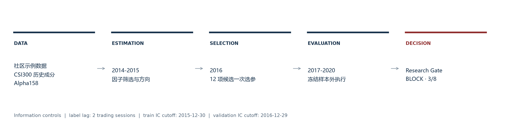
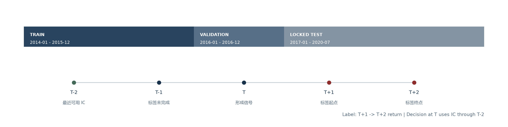
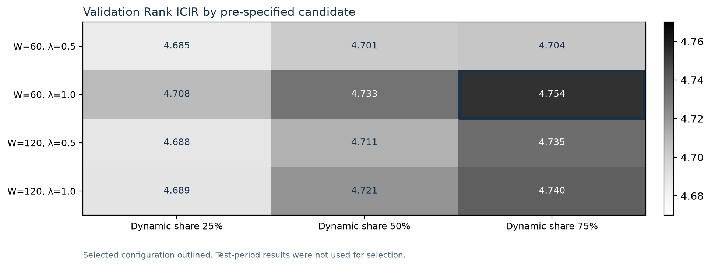
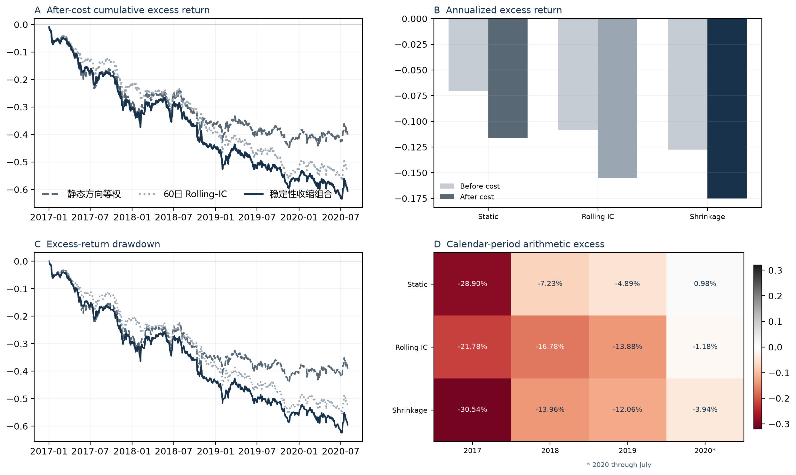

Executive summary
本研究检验基于历史信息系数的稳定性加权，能否改善 Alpha158 截面因子组合在交易约束下的样本外表现。扩展方案在测试期取得正 Rank IC，但未形成正的成本后超额收益，也未优于两个预设对照。
Research decision
BLOCK — 不进入更高保真研究阶段。 通过项为测试长度、Rank IC 与 Rank ICIR；成本后收益、信息比率、回撤及相对对照优势未达到配置阈值。
Key findings
- 稳定性收缩组合的成本后年化超额为 -17.50%，低于静态方向等权对照的 -11.59%。
- 三组方案的成本前超额均为负；交易成本约增加 4.5–4.8 个百分点的年化损失，但不是主要失败来源。
- 验证期候选 ICIR 仅分布在 4.685–4.754，候选面较平；冻结测试 ICIR 相对验证选择值下降 77.0%。
- 结果支持继续检查尾部 Top50 单调性、行业/规模暴露和换手约束，不支持“稳定性加权改善策略”的结论。
1. Mandate and scope
项目包含两条独立证据链。上游复现验证本地 Qlib 工作流；扩展评估检验独立研究假设。两条结果不构成同一模型的前后比较。
| 证据链 | 目的 | Rank IC | 成本后年化超额 | 结论范围 |
|---|---|---|---|---|
| Alpha158 + LightGBM 上游复现 | 验证框架、数据与执行环境 | 0.0496 | 9.56% | 环境可运行 |
| 稳定性加权扩展 | 检验权重方法与研究治理 | 0.0122 | -17.50% | 未晋级 |

2. Research design
训练、验证和测试按时间顺序隔离。训练期筛选 30 个因子并确定静态方向；验证期比较 12 个预设候选；测试期冻结参数。

| 阶段 | 区间 | 用途 | 有效 IC 截止 |
|---|---|---|---|
| Train | 2014-01 — 2015-12 | 因子筛选与静态方向 | 2015-12-30 |
| Validation | 2016-01 — 2016-12 | 12 项候选一次选参 | 2016-12-29 |
| Locked test | 2017-01 — 2020-07 | 最终样本外评估 | 不再调参 |
3. Methodology
ICj,t = Spearman(Fj,t, Rt+1→t+2)
w̃j,t = sign(μj,t) · max(|μj,t| − λ · σj,t/√nj,t, 0)
动态权重与训练期静态方向收缩后按绝对权重和归一化。候选空间为窗口 60/120、惩罚 0.5/1.0、动态占比 25%/50%/75%。

Selected configuration: window=60, penalty=1.0, dynamic share=75%. Validation Rank ICIR 4.754; locked-test Rank ICIR 1.093.
4. Out-of-sample results

| 方案 | Rank IC | ICIR | 成本前超额 | 成本后超额 | IR | 最大回撤 |
|---|---|---|---|---|---|---|
| 静态方向等权 | 0.0225 | 1.881 | -7.06% | -11.59% | -1.056 | -43.69% |
| 60日 Rolling-IC | 0.0085 | 0.736 | -10.82% | -15.52% | -1.575 | -55.65% |
| 稳定性收缩组合 | 0.0122 | 1.093 | -12.75% | -17.50% | -1.738 | -62.44% |
Calendar-period arithmetic excess, after cost
| 年份 | 静态方向等权 | 60日 Rolling-IC | 稳定性收缩组合 |
|---|---|---|---|
| 2017 | -28.90% | -21.78% | -30.54% |
| 2018 | -7.23% | -16.78% | -13.96% |
| 2019 | -4.89% | -13.88% | -12.06% |
| 2020（截至7月） | 0.98% | -1.18% | -3.94% |
稳定性收缩方案在四个日历分段均未取得正超额。结果的主要问题发生在成本之前；更高换手进一步扩大损失。
5. Research-promotion gate
Gate 的适用范围仅为研究晋级，不代表生产或实盘批准。阈值由 YAML 配置读取，页面不生成决策。
| 检查项 | 观测值 | 阈值 | 结果 |
|---|---|---|---|
| 测试标签日 | 868 | 500 | PASS |
| Rank IC | 0.012 | 0.000 | PASS |
| 年化 Rank ICIR | 1.093 | 0.500 | PASS |
| 成本后年化超额 | -17.50% | 0.00% | FAIL |
| 成本后信息比率 | -1.738 | 0.000 | FAIL |
| 最大回撤下限 | -62.44% | -30.00% | FAIL |
| 相对最佳对照收益优势 | -5.92% | 0.00% | FAIL |
| 相对最佳对照 IR 优势 | -0.682 | 0.000 | FAIL |
6. Limitations and next tests
- 数据为社区 Qlib 示例数据，不等同于机构级 point-in-time 行情与成分股主数据；结论不外推到实盘。
- 全截面 IC 不能直接代表 Top50 尾部组合质量；下一步需要分位数组合和 top-k 敏感性分析。
- 行业、规模和风格暴露尚未显式中性化；当前回撤不能被归因于单一因子机制。
- IC 显著性尚未对序列相关和多重检验进行校正；后续应采用 block bootstrap 并控制候选搜索偏差。
- Gate 阈值是本研究的晋级条件，不是行业统一标准。
Reproducibility: Python 3.12.13 · pyqlib 0.9.7 · LightGBM 4.7.0 · 11 tests · 86.27% core coverage.